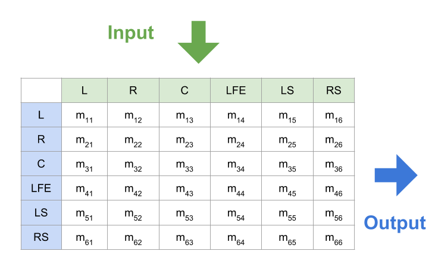
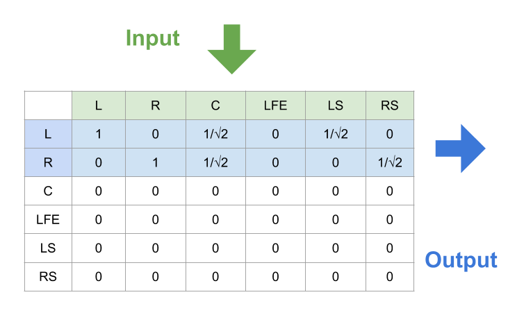
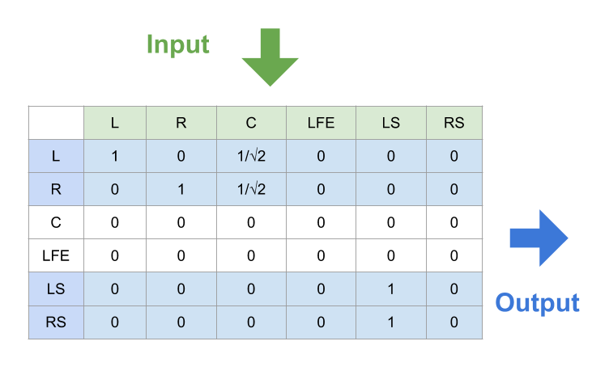

Introduction for Audio 5.1
Audio five-point one is a common surround sound layouted in home theater. It has totally six channels: five speakers and a subwoofer and this is where the term five-point one comes from.
Channel Layout
Since we have more than one channel, we need to define an explicit channel ordering to know which channel the sent/received data is matched to.
Channel layout specifies the order of input/output channel data in audio buffer. For example, if the layout is stereo, then we have two channel data. The first data is for left channel, the second one is right channel.
The arrangement for the channels is different from format to format. The most common formats are Wave Format Extensible(or WaveEx) and Society of Motion Picture & Television Engineers(or SMPTE). They defines what channels are provided and the ordering of them in different layouts.
In this post, we follow the SMPTE format. An advantage of taking this standard is that it specifies the up/downmixing behaviours between different layouts. (The SMPTE’s standard for multichannel can be founded in ITU-R BS.775 and ITU-R BS.2159-7.)
Channels
Before knowing how the channels is sorted, we should know what channel is provided.
| Code | Channel Name |
|---|---|
| M | Mono |
| L | Left (Front Left) |
| R | Right (Front Right) |
| C | Center (Front Center) |
| LS | Left Surround (Side Left) |
| RS | Right Surround (Side Right) |
| RLS | Rear Left Surround (Back Left) |
| RC | Rear Center (Back Center) |
| RRS | Rear Right Surround (Back Right) |
| LFE | Low Frequency Effects |
Layouts
The layout in SMPTE’s format is as follows. Each layout is defined by a particular permutation of the above channels.
(The sample code to set channel layout on OSX is here.)
| Layout | channel order | |||||||
|---|---|---|---|---|---|---|---|---|
| DUAL-MONO | L | R | ||||||
| DUAL-MONO-LFE | L | R | LFE | |||||
| MONO | M | |||||||
| MONO-LFE | M | LFE | ||||||
| STEREO | L | R | ||||||
| STEREO-LFE | L | R | LFE | |||||
| 3F | L | R | C | |||||
| 3F-LFE | L | R | C | LFE | ||||
| 2F1 | L | R | RC | |||||
| 2F1-LFE | L | R | LFE | RC | ||||
| 3F1 | L | R | C | RC | ||||
| 3F1-LFE | L | R | C | LFE | RC | |||
| 2F2 | L | R | LS | RS | ||||
| 2F2-LFE | L | R | LFE | LS | RS | |||
| 3F2 | L | R | C | LS | RS | |||
| 3F2-LFE | L | R | C | LFE | LS | RS | ||
| 3F3R-LFE | L | R | C | LFE | RC | LS | RS | |
| 3F4-LFE | L | R | C | LFE | RLS | RRS | LS | RS |
Mixing
We already know that the audio layout can be configured into different types based on the number of the channels. The question is: what should we do when the input layout from the audio source doesn’t match the user’s output layout?
If the two channel layouts are equal, then they must have same numbers of channels and same channel order. Conversely, if two audio settings have different numbers of channels (e.g., {L, R} and {M, LFE}), or they have same numbers of channels but different orders (e.g., {L, R} and {R, L}), then they must have different channel layouts.
When the input layout is different from the output layout, we need to convert the audio input data to fit the audio output’s configuration. We call it mixing.
(The sample code to mix audio data on OSX is here.)
Mixing matrix

Although it may have different definitions to convert the audio data from input into output, they can be summarized into the following equations. The above figure illustrates their relationships, and the value of varies from definition to definition.
To simplify them, we can rewite these equations into a matrix form:
Downmixing
When numbers of input channels > numbers of output channels, we call it downmixing. (In this case, the input channel layout is definitiely different from the output one.) The most common case for downmixing is to downmix different audio layouts into stereo. The audio sources on the internet have various layouts while most users only have two speakers.
(The downward mixing mechanism of SMPTE for audio 5.1 is defined in Table 2 of ITU-R BS.775-3.)
Downmix audio 5.1 to stereo(stereophonic sound)

Downmix audio 5.1 to quad(quadraphonic sound/4.0 surround sound)

Upmixing
When numbers of input channels < numbers of output channels, we call it upmixing. (In this case, the input channel layout is definitiely different from the output one.)
The most common case for this is to upmix stereo data(2 channels). into 3F2-LFE/audio 5.1(6 channels). There are several papers discussing how to do that.
Other case
The other case happens when numbers of input channels = numbers of output channels, but their channel layouts are different.
The conversion is easy as converting from STEREO-LFE: {L, R, LFE} to 3F: {L, R, C} (simply passing data):
;it’s also as complicated as converting from 3F1: {L, R, C, RC} to 2F2(or quad): {L, R, LS, RS}:
, where are specific values.
Implementation
Many open source cross-platform audio libraries are good refereces:
My experience for developling multi-channel is limited on cubeb. The project page is hosted here. From my experience, all the documents for audio development are vague and sometimes you even cannot find how to use the API on some platforms(especially on OSX). The best way to learn that is to read the source code on github.